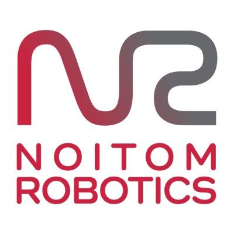
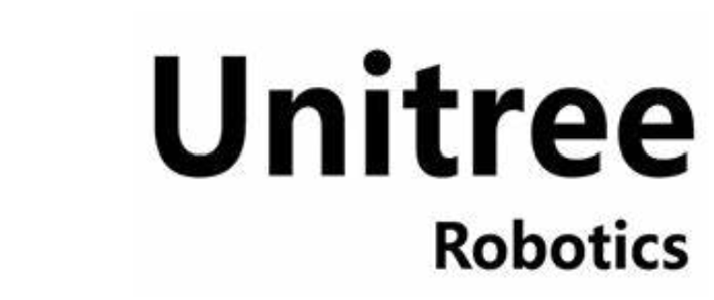
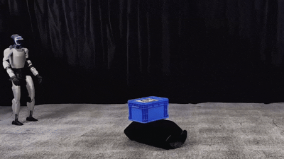
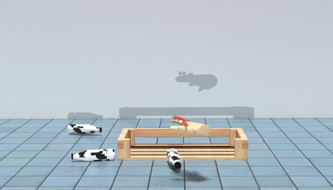
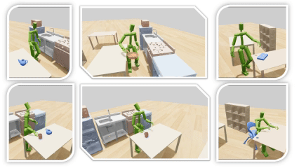
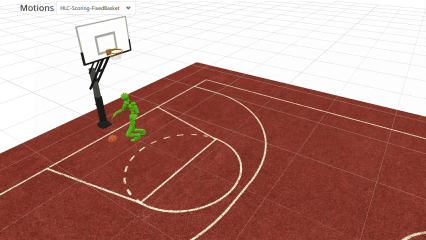
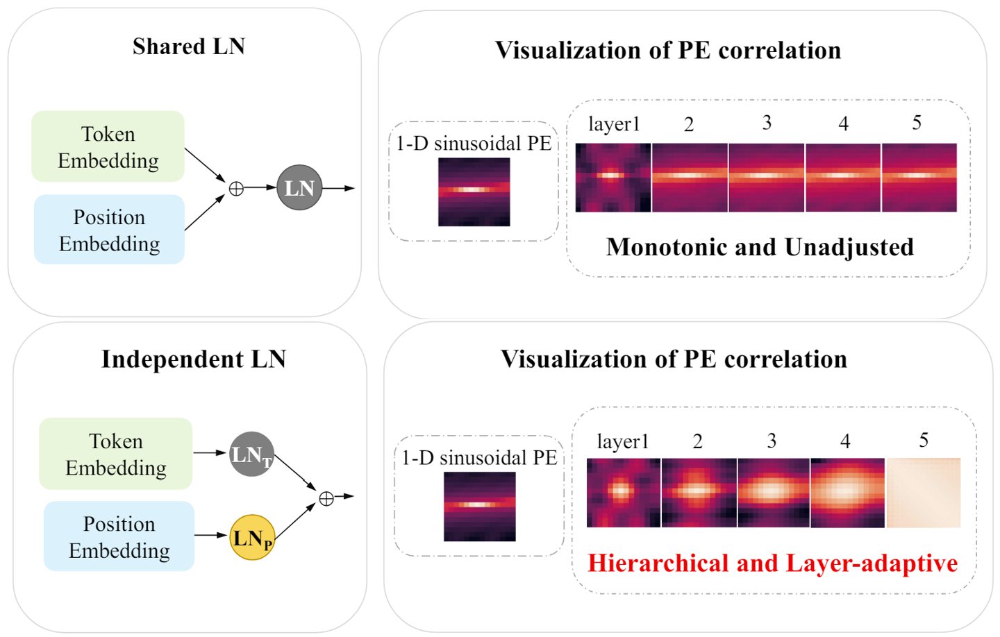
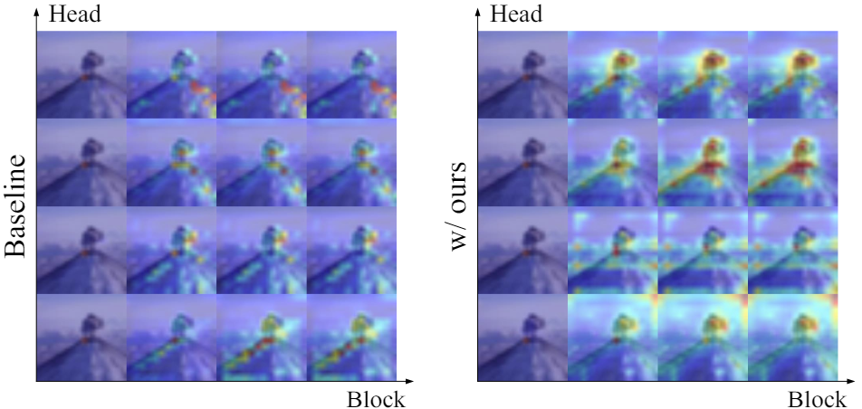

Runyi (Ingrid) YuPhD Student
Hong Kong University of Science and Technology |
|


Biography
I am a second-year phd student at HKUST, supervised by Qifeng Chen. I obtained my Master's Degree from Peking University in 2024 and Bachelor's Degree from Beijing Normal University in 2021. I used to be an intern at Shanghai AI Laboratory, Unitree, and MSRA.
My research interests include Robotics, Computer Vision, Machine Learning and their intersections. From 2021 to 2022, I focused on the Transformer-based Understanding researches. From 2023 to 2024, I worked on image/video generation and talking head generation. Now, I am exploring the Embodied AI, especially the Humanoid Manipulation.
Cooperation and discussion are welcomed.
I will be actively seeking job opportunities since June 2026.
News
- [03/2025] One paper was accepted by ICRA 2026 .
- [03/2025] One paper was accepted by ICCV 2025 .
- [03/2025] One paper was accepted by SIGGRAPH 2025 .
- [02/2025] One paper was accepted by 🏆 Highlight CVPR 2025 .
- [12/2024] One paper was accepted by AAAI 2025 .
- [07/2024] One paper was accepted by ECCV 2024 .
- [06/2024] Graduated from Peking University .
- [10/2023] One paper was accepted by ICLR 2024 .
- [06/2023] One paper was accepted by ICCV 2023 .
- [06/2023] One paper was accepted as 🏆 Oral in CVPR Workshop 2023 .
- [02/2023] One paper was accepted as 🏆 Highlight in CVPR 2023 .
- [07/2022] One paper was accepted by ECCV 2022 .
- [06/2021] Graduated from Beijing Normal University .
Internship
|
 |
Noitom Robotics Oct. 2025 - Now, Shenzhen, China closely worked with Lei Han Topic: Humanoid Loco-Manipulation |

|
Shanghai AI Laboratory Dec. 2024 - Sep. 2025, OpenRobotLab, Shanghai, China closely worked with Jingbo Wang Topic: Humanoid Scene Interatcion |
|
 |
Unitree Apr. 2024 - Aug. 2024, Unitree, R&D departments, Hangzhou, China closely worked with Yinhuai Wang Topic: Real World Humanoid-Object Interaction |
|
Microsoft Research Asia Apr. 2023 - Mar. 2024, Beijing, China Topic: Talking Head Generation |
|
Education
|
The Hong Kong University of Science and Technology, Hong Kong PhD Student in Visual Intelligence Lab, HKUST Advisor: Prof. Qifeng Chen Sep. 2024 - Future |
|
|
Peking University, China Master of Science in Computer Science Advisor: Prof. Jie Chen Sep. 2021 - Jun. 2024 |
|
|
Beijing Normal Univesity, China Bachelor of Management in Information Systems Sep. 2017 - Jun. 2021
|
Selected Publications
| Embodied AI | |

|
HumanX: Toward Agile and Generalizable Humanoid Interaction Skills from Human Videos Preprint ArxivYinhuai Wang*, Qihan Zhao*, Yuen Fui Lau*, Runyi Yu, Hok Wai Tsui, Qifeng Chen, Jingbo Wang, Jiangmiao Pang, Ping Tan [paper] [project page] |
|
 |
PhysHSI: Towards a Real-World Generalizable and Natural Humanoid-Scene Interaction System Preprint ArxivHuayi Wang*, Wentao Zhang*, Runyi Yu*, Tao Huang, Junli Ren, Feiyu Jia, Zirui Wang, Xiaojie Niu, Xiao Chen, Jiahe Chen, Qifeng Chen, Jingbo Wang, Jiangmiao Pang [paper] [project page] [code] |

|
Switch: Learning Agile Skills Switching for Humanoid Robots ICRA 2026Yuen Fui Lau*, Qihan Zhao*, Yinhuai Wang*(project lead), Runyi Yu, Hok Wai Tsui, Qifeng Chen, Ping Tan [paper] [project page] |
|
 |
HOT: Learning Generalizable Hand-Object Tracking from Synthetic Demonstrations Preprint ArxivYinhuai Wang*, Runyi Yu*, Hok Wai Tsui*, Xiaoyi Lin*, Hui Zhang, Qihan Zhao, Ke Fan,Miao Li, Jie Song, Jingbo Wang, Qifeng Chen, Ping Tan [paper] [project page] [code] |
|
 |
SkillMimic-V2: Learning Robust and Generalizable Interaction Skills from Sparse and Noisy Demonstrations SIGGRAPH 2025Runyi Yu*, Yinhuai Wang*, Qihan Zhao*, Hok Wai Tsui, Jingbo Wang, Ping Tan, Qifeng Chen [paper] [project page] [code] |
|
 |
SkillMimic: Learning Basketball Interaction Skills from Demonstrations 🏆 CVPR 2025 HighlightYinhuai Wang*, Qihan Zhao*, Runyi Yu*, Hok Wai Tsui, Ailing Zeng, Jing Lin, Zhengyi Luo, Jiwen Yu, Xiu Li, Qifeng Chen, Jian Zhang, Lei Zhang, Ping Tan [paper] [project page] [code] |
| Talking Head | |

|
Make Your Actor Talk: Generalizable and High-Fidelity Lip Sync with Motion and Appearance Disentanglement Preprint ArxivRunyi Yu, Tianyu He, Ailing Zhang, Yuchi Wang, Junliang Guo, Xu Tan, Chang Liu, Jie Chen, Jiang Bian [paper] [project page] |

|
GAIA: Data-driven Zero-shot Talking Avatar Generation Tianyu He*, Junliang Guo*, Runyi Yu*, Yuchi Wang*, Jialiang Zhu, Kaikai An, Leyi Li, Xu Tan, Chunyu Wang, Han Hu, HsiangTao Wu, Sheng Zhao, Jiang Bian ICLR 2024[paper] [project page] |
| Computer Vision | |
|
 |
LaPE: Layer-adaptive Position Embedding for Vision Transformers with Independent Layer Normalization Runyi Yu*, Zhennan Wang*, Yinhuai Wang*, Kehan Li, Chang Liu, Haoyi Duan, Xiangyang Ji, Jie Chen ICCV 2023 |
|
 |
Locality guidance for improving vision transformers on tiny datasets Kehan Li*, Runyi Yu*, Zhennan Wang, Li Yuan, Guoli Song, Jie Chen ECCV 2022 |
Community Services
-
Conference Reviewer
-
Journal Reviewer